<!doctype html>
<html lang="ro">
<head>
<meta charset="utf-8">
<meta name="viewport" content="width=device-width, initial-scale=1, viewport-fit=cover">
<title>Misiunea Scenă</title>
<meta name="description" content="Lecție-joc pentru clasa a V-a: mediul grafic interactiv Scratch, interfața, categoriile de blocuri, structura secvențială și structura alternativă cu blocuri, evenimente, atingeri și un mini-joc.">
<link rel="preconnect" href="https://fonts.googleapis.com">
<link rel="preconnect" href="https://fonts.gstatic.com" crossorigin>
<link rel="stylesheet" href="https://fonts.googleapis.com/css2?family=Chewy&family=Nunito:ital,wght@0,400;0,700;0,800;1,400&family=Inconsolata:wght@500;700&display=swap&subset=latin-ext">
<link rel="stylesheet" href="../_motor/motor.css">
<style>
:root{
  --desk:#EEF3FA; --paper:#FFFFFF; --paper2:#F2F6FC; --line:#D2DCEB;
  --ink:#1A2233; --ink2:#55607A; --accent:#6D3FC0; --accentInk:#FFFFFF; --sel:#E6DDF7;
  --mark:#FFE07A; --markInk:#1A2233; --ok:#23784A; --okbg:#E0F2E7; --bad:#B8362E; --badbg:#FBE5E3;
  --fd:"Chewy","Segoe UI",system-ui,sans-serif; --fb:"Nunito","Segoe UI",system-ui,sans-serif; --fm:"Inconsolata",Consolas,monospace;
  --ev:#E6A800; --mv:#4C7FD9; --ct:#E08A1E; --op:#3FA95B;
}
@media (prefers-color-scheme:dark){:root:not([data-theme="light"]){
  --desk:#10141D; --paper:#181E2A; --paper2:#202838; --line:#343E55;
  --ink:#E6EAF3; --ink2:#A3ADC4; --accent:#B597F5; --accentInk:#10141D; --sel:#382A5C;
  --mark:#EBC95C; --markInk:#1A2233; --ok:#6CCB8F; --okbg:#18301F; --bad:#FF8479; --badbg:#3B1E1E;
  --ev:#B88A00; --mv:#3E6CC0; --ct:#C8781A; --op:#2F8A47;
}}
:root[data-theme="dark"]{
  --desk:#10141D; --paper:#181E2A; --paper2:#202838; --line:#343E55;
  --ink:#E6EAF3; --ink2:#A3ADC4; --accent:#B597F5; --accentInk:#10141D; --sel:#382A5C;
  --mark:#EBC95C; --markInk:#1A2233; --ok:#6CCB8F; --okbg:#18301F; --bad:#FF8479; --badbg:#3B1E1E;
  --ev:#B88A00; --mv:#3E6CC0; --ct:#C8781A; --op:#2F8A47;
}
/* tema jocului: o stivă de blocuri colorate, ca în paleta unui mediu grafic interactiv */
.banda{display:flex;align-items:center;gap:6px;padding:7px 12px;white-space:nowrap;overflow:hidden;font-family:var(--fb);font-size:.7rem;font-weight:800;color:#fff}
.banda .b{flex:none;display:inline-block;padding:3px 9px;border-radius:6px;position:relative}
.banda .ev{background:var(--ev);border-radius:14px 14px 6px 6px}
.banda .mv{background:var(--mv)}
.banda .ct{background:var(--ct)}
.banda .op{background:var(--op);border-radius:12px}
.banda .mv::before,.banda .ct::before{content:"";position:absolute;left:10px;top:-3px;width:12px;height:4px;background:inherit;border-radius:2px 2px 0 0}
h1 .st{color:var(--accent)}
</style>
</head>
<body>
<script src="../_motor/motor.js"></script>
<script>
const ALT='Structura alternativă (decizională)Medii grafice interactive - elemente de interfață specifice mediului grafic interactiv';
const BLK='Modalități de reprezentare a structurilor secvențiale și alternative prin blocuri grafice';
const LEVELS=[
{t:'Interfața mediului grafic',lectii:[31],continuturi:[ALT],text:`
<p>Într-un <mark>mediu grafic interactiv</mark>, de exemplu Scratch, construiești algoritmi din <mark>blocuri</mark>, fără să scrii cod.</p>
<ul>
<li>în stânga e <mark>paleta de blocuri</mark>, pe categorii;</li>
<li>în mijloc e <mark>zona de cod</mark>, unde tragi și îmbini blocurile;</li>
<li>în dreapta sus e <mark>scena</mark>, unde se mișcă <mark>personajele</mark> (în engleză, <em>sprites</em>);</li>
<li>sub scenă alegi sau adaugi personaje.</li>
</ul>
<figure class="captura"><a href="../scratch-v/img/scratch-interfata.webp" target="_blank">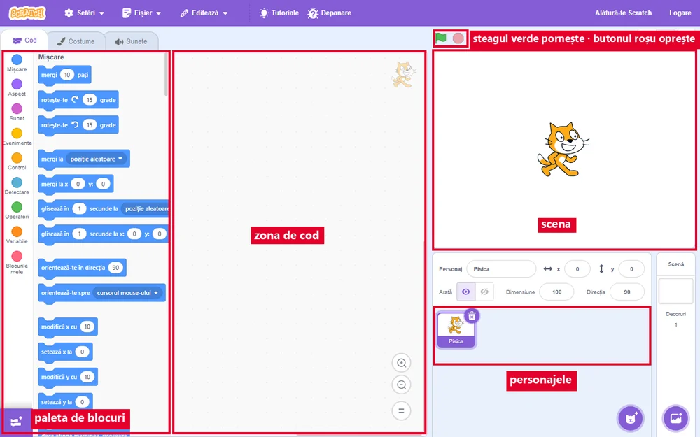</a>
<figcaption>Editorul Scratch, cu zonele lui. Imaginile de la acest joc sunt din editorul online, cu interfața în română.</figcaption></figure>
<p><strong>Steagul verde</strong>, deasupra scenei, pornește programul. <strong>Butonul roșu</strong> îl oprește.</p>
<p>Numele din meniuri pot diferi puțin după limba aleasă în Scratch. Ține mouse-ul pe un element ca să verifici ce face.</p>`,
qs:[
 {t:'choice',q:'Unde îmbini blocurile ca să construiești programul?',o:['În zona de cod','Pe scenă','În paleta de blocuri','Sub scenă, la lista de personaje'],ok:0,why:'Din paletă doar iei blocurile. Le tragi în zona de cod și acolo le îmbini. Pe scenă vezi ce face personajul.'},
 {t:'match',q:'Ce face fiecare zonă a ecranului, de la paletă până la butonul roșu?<figure class="captura"><a href="../scratch-v/img/scratch-zone.webp" target="_blank">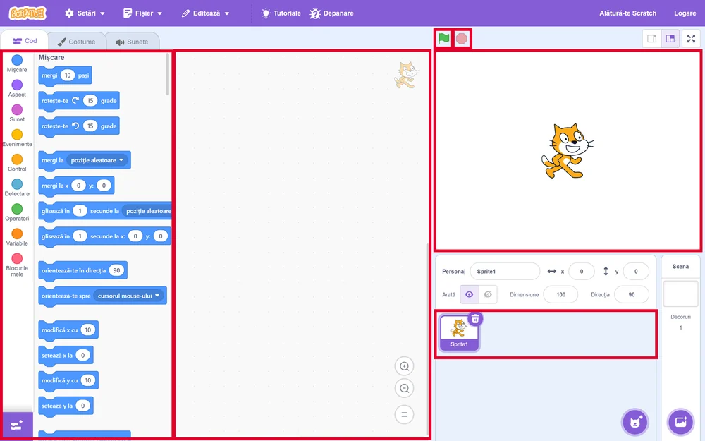</a><figcaption>Editorul Scratch adevărat, cu zonele doar <b>încadrate</b>, fără nume.</figcaption></figure>',pairs:[['Paleta de blocuri','de aici iei blocurile, pe categorii'],['Zona de cod','aici îmbini blocurile'],['Scena','aici vezi ce fac personajele'],['Steagul verde','pornește programul'],['Butonul roșu','oprește programul']],why:'Iei blocuri din paletă, le îmbini în zona de cod, pornești cu steagul și privești rezultatul pe scenă.'},
 {t:'tf',q:'Personajele se mișcă în zona de cod.',ok:false,why:'Fals. În zona de cod stau blocurile. Personajele se mișcă pe scenă, după ce pornești programul.'},
 {t:'choice',q:'Programul tău nu se mai oprește și pisica tot aleargă. Ce apeși?',o:['Butonul roșu de lângă steag','Steagul verde, încă o dată','Tasta Enter','Un bloc din paletă'],ok:0,why:'Butonul roșu oprește toate scripturile. Steagul verde doar ar porni programul din nou.'}
]},
{t:'Categoriile de blocuri',lectii:[31],continuturi:[ALT,BLK],text:`
<p>Blocurile sunt așezate pe <mark>categorii</mark>. Fiecare categorie are culoarea ei:</p>
<ul>
<li><strong>Mișcare</strong> (<em>Motion</em>, albastru): mergi, rotește-te, du-te la x și y;</li>
<li><strong>Aspect</strong> (<em>Looks</em>, mov): spune, schimbă costumul;</li>
<li><strong>Evenimente</strong> (<em>Events</em>, galben): blocurile care <mark>pornesc</mark> un script;</li>
<li><strong>Control</strong> (<em>Control</em>, portocaliu): așteaptă, repetă, <mark>dacă … atunci</mark>;</li>
<li><strong>Operatori</strong> (<em>Operators</em>, verde): calcule și comparații.</li>
</ul>
<figure class="captura"><a href="../scratch-v/img/scratch-categorii.webp" target="_blank">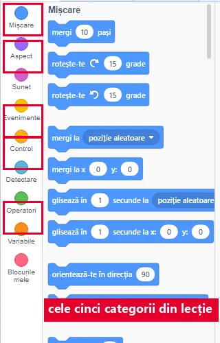</a>
<figcaption>Categoriile, fiecare cu bulina ei colorată. Blocurile din paletă au aceeași culoare ca bulina.</figcaption></figure>
<p>Pe scenă, poziția se dă prin <mark>x</mark> (stânga-dreapta) și <mark>y</mark> (jos-sus). Centrul scenei este x = 0, y = 0.</p>
<figure class="captura"><a href="../scratch-v/img/scratch-scena-xy.webp" target="_blank">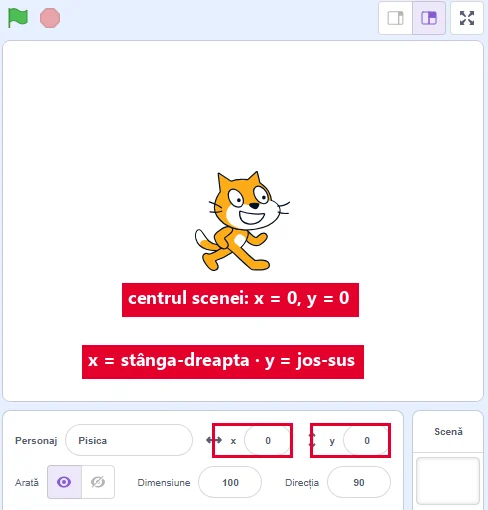</a>
<figcaption>Pisica stă chiar în centru, iar sub scenă scrie <b>x 0</b> și <b>y 0</b>.</figcaption></figure>`,
qs:[
 {t:'choice',q:'În ce categorie cauți blocul care face pisica să spună „Salut!”?',o:['Aspect (Looks)','Mișcare (Motion)','Evenimente (Events)','Operatori (Operators)'],ok:0,why:'Tot ce ține de cum arată personajul, inclusiv bulele cu text și costumele, e la Aspect. Mișcare schimbă doar poziția și direcția.'},
 {t:'classify',q:'În ce categorie e fiecare bloc?',cats:['Mișcare','Evenimente','Control'],items:[['mergi 10 pași',0],['rotește-te 15 grade',0],['când se dă clic pe steagul verde',1],['când este apăsată tasta spațiu',1],['așteaptă 1 secunde',2],['dacă … atunci',2]],why:'Mișcare mută personajul. Evenimentele pornesc scriptul la un semnal. Control hotărăște când și dacă se execută blocurile.'},
 {t:'tf',q:'Centrul scenei are coordonatele x = 0 și y = 0.',ok:true,why:'Adevărat. Spre dreapta x crește, spre stânga scade. În sus y crește, în jos scade.'},
 {t:'choice',q:'Personajul e la x = 0, y = 0. Unde ajunge dacă îl duci la x = 100, y = 0?',o:['Mai la dreapta','Mai la stânga','Mai sus','Mai jos'],ok:0,why:'y rămâne 0, deci nu urcă și nu coboară. x crește de la 0 la 100, adică personajul se mută spre dreapta.'}
]},
{t:'Secvența cu blocuri',lectii:[32],continuturi:[BLK,'Structura secvenţială (liniară)'],text:`
<p>Un <mark>script</mark> este o stivă de blocuri îmbinate. Sus stă un bloc de eveniment, de exemplu „când se dă clic pe steagul verde”.</p>
<p>Blocurile se execută <mark>de sus în jos</mark>, unul după altul: este <mark>structura secvențială</mark>, pe care o știi din algoritmii scriși în cuvinte.</p>
<p>Blocurile de mișcare se execută foarte repede. Dacă pui două blocuri „mergi 100 de pași” unul sub altul, vezi doar unde ajunge pisica la final. Cu un bloc <mark>așteaptă 1 secunde</mark> între ele, vezi fiecare pas.</p>
<figure class="captura"><a href="../scratch-v/img/scratch-fara-asteptare.webp" target="_blank">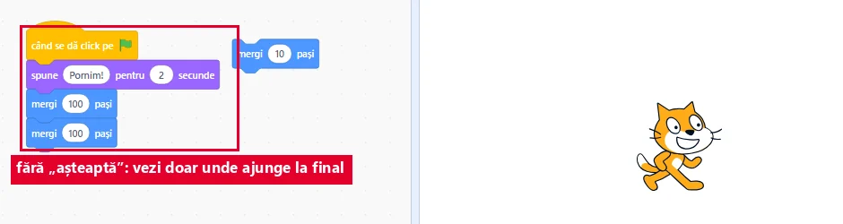</a>
<figcaption><b>Fără</b> „așteaptă”: cei doi pași se fac într-o clipă, deci vezi doar rezultatul.</figcaption></figure>
<p>Un bloc lăsat singur, neîmbinat cu stiva, nu se execută când apeși steagul.</p>
<figure class="captura"><a href="../scratch-v/img/scratch-secventa.webp" target="_blank">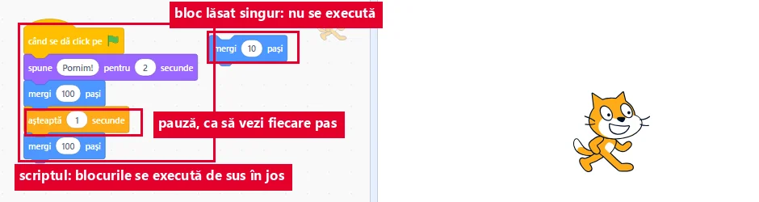</a>
<figcaption>Același script, <b>cu</b> „așteaptă 1 secunde”. Blocul din dreapta stă singur: la steag, el nu pornește.</figcaption></figure>`,
qs:[
 {t:'tf',q:'Într-un script, blocurile se execută de jos în sus.',ok:false,why:'Fals. Se execută de sus în jos, începând cu blocul de eveniment. Ordinea din stivă e ordinea pașilor.'},
 {t:'order',q:'Pune blocurile în ordine: la steag, pisica spune „Pornim!” 2 secunde, apoi merge 100 de pași.',items:['când se dă clic pe steagul verde','spune „Pornim!” pentru 2 secunde','mergi 100 de pași'],why:'Blocul de eveniment stă mereu sus. Apoi pașii, în ordinea cerută: întâi vorbește, apoi merge.'},
 {t:'choice',q:'Ai pus două blocuri „mergi 100 de pași” unul sub altul. Pisica pare că sare direct la final. Ce adaugi între ele ca să vezi ambii pași?',o:['așteaptă 1 secunde','încă un bloc de eveniment','rotește-te 15 grade','spune „Salut!”, fără durată'],ok:0,why:'Blocul „așteaptă” face o pauză între pași, deci vezi fiecare mișcare. Celelalte blocuri schimbă ce face pisica, nu îți arată pașii separat.'},
 {t:'choice',q:'Ai tras blocul „mergi 10 pași” în zona de cod, dar l-ai lăsat deoparte, neîmbinat. Ce se întâmplă la steagul verde?',o:['Nu se execută','Se execută primul','Se execută ultimul','Se execută de două ori'],ok:0,why:'La steag pornesc doar blocurile îmbinate sub blocul de eveniment. Un bloc singur nu face parte din script.'}
]},
{t:'Decizia cu blocuri și evenimente',lectii:[33],continuturi:[ALT,BLK],text:`
<p>Structura alternativă are două blocuri, în categoria Control:</p>
<ul>
<li><mark>dacă … atunci</mark>: execută blocurile din interior doar dacă condiția e adevărată;</li>
<li><mark>dacă … atunci … altfel</mark>: are două ramuri și execută una singură.</li>
</ul>
<figure class="captura"><a href="../scratch-v/img/scratch-daca-atunci.webp" target="_blank">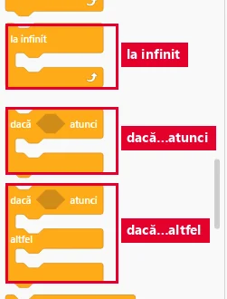</a>
<figcaption>Cele două blocuri de decizie, în categoria <b>Control</b>. Al doilea are și ramura <b>altfel</b>.</figcaption></figure>
<p><mark>Condiția</mark> are forma unui hexagon (colțuri ascuțite). O iei din Operatori, de exemplu <code>scor &gt; 10</code>, sau din categoria cu blocuri de detectare, de exemplu „atinge marginea?”.</p>
<figure class="captura"><a href="../scratch-v/img/scratch-decizie-rulata.webp" target="_blank">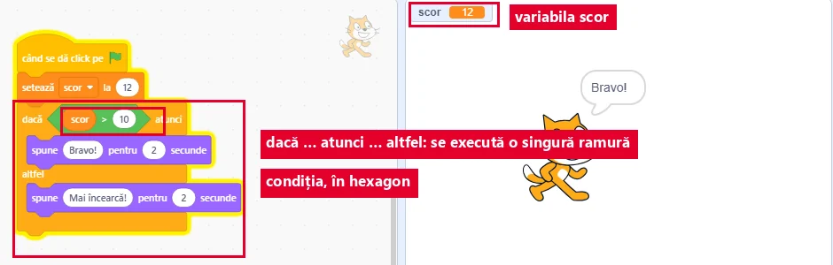</a>
<figcaption>Rulat chiar acum: scorul e 12, deci condiția e adevărată și s-a executat <b>doar</b> ramura „atunci”.</figcaption></figure>
<p>Un script poate porni și la alte <mark>evenimente</mark>: „când este apăsată tasta săgeată dreapta” sau „când se dă clic pe acest personaj”.</p>
<figure class="captura"><a href="../scratch-v/img/scratch-eveniment-tasta.webp" target="_blank">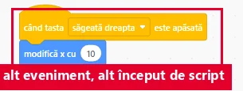</a>
<figcaption>Alt început de script, în același proiect: pornește la apăsarea tastei, nu la steag.</figcaption></figure>`,
qs:[
 {t:'choice',q:'Vrei ca pisica să spună „Bravo!” dacă scorul e mai mare decât 10 și „Mai încearcă!” altfel. Ce bloc folosești?',o:['dacă … atunci … altfel','dacă … atunci','așteaptă 1 secunde','mergi 10 pași'],ok:0,why:'Sunt două mesaje, unul pentru fiecare caz, deci ai nevoie de două ramuri. „dacă … atunci” are o singură ramură.'},
 {t:'tf',q:'În „dacă … atunci … altfel”, Scratch execută ambele ramuri, pe rând.',ok:false,why:'Fals. Ca în algoritmii scriși în cuvinte, condiția alege o singură ramură: „atunci” dacă e adevărată, „altfel” dacă e falsă.'},
 {t:'classify',q:'Ce poate intra în locul hexagonal al lui „dacă”?',cats:['Condiție (hexagon)','Nu e condiție'],items:[['scor > 10',0],['atinge marginea?',0],['tasta spațiu apăsată?',0],['mergi 10 pași',1],['spune „Salut!”',1]],why:'În „dacă” intră doar blocuri care răspund cu adevărat sau fals. „mergi” și „spune” sunt comenzi, nu întrebări.'},
 {t:'match',q:'Leagă fiecare eveniment de momentul în care pornește scriptul.',pairs:[['când se dă clic pe steagul verde','la pornirea programului'],['când este apăsată tasta săgeată dreapta','când jucătorul apasă săgeata'],['când se dă clic pe acest personaj','când jucătorul dă clic pe personaj']],why:'Fiecare bloc de eveniment așteaptă un semnal. Un joc are, de obicei, mai multe scripturi, pornite de evenimente diferite.'}
]},
{t:'Atingeri și scor',lectii:[33],continuturi:[BLK],text:`
<p>Într-un joc, personajele se <mark>ating</mark>: pisica prinde un măr, mingea lovește peretele. Asta este o <mark>coliziune</mark>.</p>
<p>O verifici cu o decizie: <code>dacă atinge Măr? atunci …</code>. Ca verificarea să se facă tot timpul, decizia se pune în blocul <mark>la infinit</mark> (<em>forever</em>).</p>
<figure class="captura"><a href="../scratch-v/img/scratch-atingere-infinit.webp" target="_blank">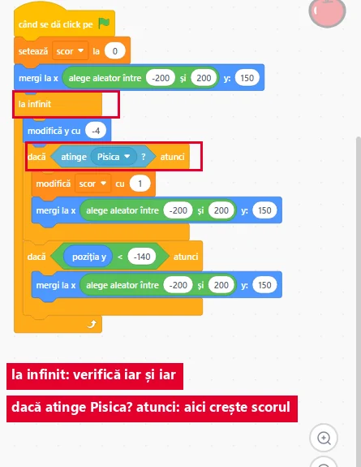</a>
<figcaption>Codul mărului: decizia stă <b>în</b> „la infinit”, deci atingerea e verificată tot timpul.</figcaption></figure>
<p>Scorul se ține într-o <mark>variabilă</mark>, făcută cu butonul de creare a variabilei din categoria Variabile. La start o pui la 0, iar la fiecare prindere o <mark>modifici cu 1</mark>.</p>
<figure class="captura"><a href="../scratch-v/img/scratch-scor-0.webp" target="_blank">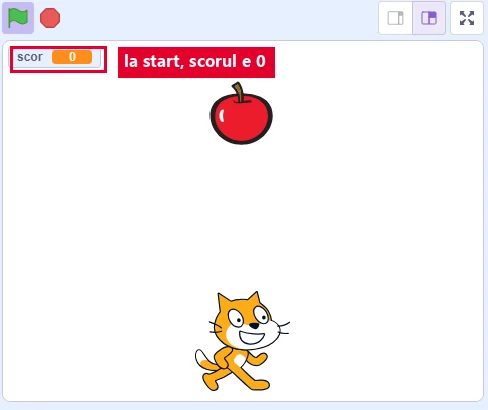</a>
<figcaption>Chiar după steagul verde: scorul e pus la <b>0</b>.</figcaption></figure>
<figure class="captura"><a href="../scratch-v/img/scratch-scor.webp" target="_blank">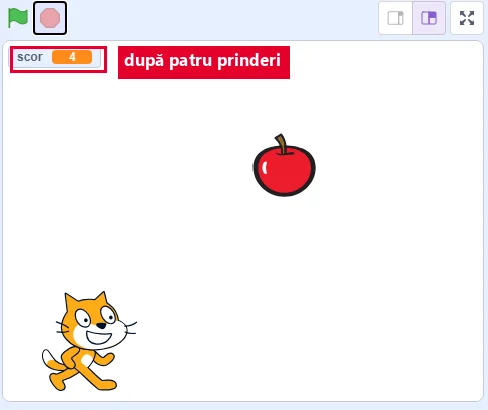</a>
<figcaption>Aceeași scenă după patru prinderi: scorul arată <b>4</b>.</figcaption></figure>`,
qs:[
 {t:'choice',q:'Cum verifici dacă pisica a prins mărul?',o:['Cu „dacă atinge Măr? atunci”','Cu „mergi 10 pași”','Cu „așteaptă 1 secunde”','Cu „spune Măr!”'],ok:0,why:'Întrebarea „atinge Măr?” răspunde cu adevărat sau fals, iar „dacă” face ceva doar când răspunsul e adevărat.'},
 {t:'tf',q:'Dacă decizia „dacă atinge Măr?” e pusă o singură dată, la start, atingerile de mai târziu nu mai sunt verificate.',ok:true,why:'Adevărat. Decizia se verifică o dată și gata. De aceea se pune în „la infinit”, care o verifică iar și iar cât timp merge jocul.'},
 {t:'order',q:'Pune în ordine scriptul mărului care numără prinderile.',items:['când se dă clic pe steagul verde','setează scor la 0','la infinit','dacă atinge Pisică? atunci','modifică scor cu 1'],why:'Scorul pornește de la 0 o singură dată, la start. Apoi, la infinit, verifici atingerea și abia când ea are loc adaugi 1.'},
 {t:'choice',q:'Pisica prinde mărul de mai multe ori, dar scorul rămâne 0. Care e greșeala cea mai probabilă?',o:['Decizia nu e în „la infinit”','Scorul pornește de la 0','Mărul are alt costum','Steagul verde a fost apăsat'],ok:0,why:'Fără „la infinit”, atingerea e verificată o singură dată, chiar la start, când mărul e încă sus și nu atinge pisica. Prinderile de mai târziu nu mai sunt verificate, așa că scorul nu crește niciodată. Pornirea de la 0 e corectă, iar costumul nu schimbă numărarea.'}
]},
{t:'Mini-jocul Prinde mărul',final:true,lectii:[34],continuturi:[BLK,ALT],text:`
<p><strong>Misiunea finală.</strong> Faci cu un coleg jocul <mark>Prinde mărul</mark>.</p>
<ul>
<li>pisica se mută la stânga și la dreapta cu tastele săgeți;</li>
<li>mărul cade de sus;</li>
<li>la fiecare prindere, scorul crește cu 1, iar mărul pornește iar de sus;</li>
<li>când scorul ajunge la 10, pisica spune „Am câștigat!”.</li>
</ul>
<figure class="captura"><a href="../scratch-v/img/scratch-prinde-marul.webp" target="_blank">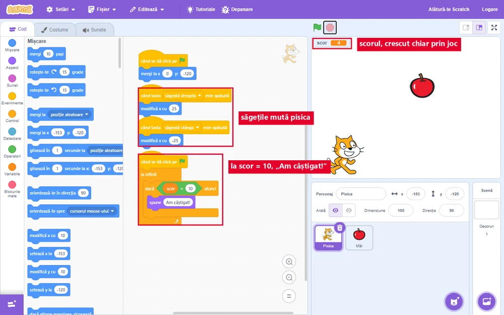</a>
<figcaption>Jocul, chiar jucat: scorul a ajuns la 4. În stânga se văd scripturile pisicii — săgețile și condiția de câștig.</figcaption></figure>
<p>Folosești tot ce ai învățat: evenimente, secvență, decizii, atingeri și o variabilă. La final îi arăți jocul profesorului și explici cum funcționează.</p>`,
qs:[
 {t:'classify',q:'Ce eveniment pornește fiecare script?',cats:['Steagul verde','Tasta săgeată dreapta'],items:[['Scorul se pune la 0',0],['Mărul pornește de sus',0],['Pisica se mută la dreapta cu 10 pași',1],['Pisica se întoarce cu fața spre dreapta',1]],why:'Ce se pregătește la începutul jocului pornește la steag. Mișcarea pisicii pornește doar când jucătorul apasă tasta.'},
 {t:'choice',q:'Ce condiție pui ca pisica să spună „Am câștigat!”?',o:['scor = 10','scor < 10','atinge marginea?','scor = 0'],ok:0,why:'Jocul se câștigă exact când scorul ajunge la 10. „scor < 10” ar fi adevărat tot timpul până atunci, iar marginea nu are legătură cu scorul.'},
 {t:'hunt',q:'Explicația Ioanei despre jocul ei are 2 greșeli. Apasă pe ele.',src:'La steagul verde scorul se pune la 0. Mărul verifică [[o singură dată, la început,|atingerea trebuie verificată tot timpul, în „la infinit”]] dacă atinge pisica. Când o atinge, scorul crește cu 1 și mărul se duce iar sus. Pisica se mișcă [[când se dă clic pe steagul verde|pisica se mișcă la apăsarea tastelor săgeți, nu la steag]].',indiciu:'Uită-te când se verifică atingerea și ce mișcă pisica.',why:'O atingere verificată o singură dată nu numără prinderile de mai târziu. Mișcarea jucătorului pornește de la tastele săgeți.'},
 {t:'tf',q:'Jocul folosește structura alternativă: mărul face ceva doar dacă atinge pisica.',ok:true,why:'Adevărat. „dacă atinge Pisică? atunci” este o decizie: blocurile din interior se execută doar când condiția e adevărată.'}
]}
];

JocMotor.porneste({
  cheie:'joc_scratch_v',
  titlu:'Misiunea Scenă',
  marca:'Misiunea <b>Scenă</b>',
  h1:'Misiunea Scenă<span class="st"> ⚑</span>',
  clasa:'a V-a',
  unitate:'V-U6',
  unitateTitlu:'Din algoritm în joc: mediul grafic interactiv (Scratch)',
  competente:['CS.3.2','CS.3.3'],
  lectii:'31–34',
  intro:'Șase niveluri despre mediul grafic interactiv: interfața, categoriile de blocuri, secvența și decizia făcute din blocuri, evenimentele, atingerile și scorul. La fiecare nivel citești o pagină scurtă și răspunzi la întrebări. La final verifici jocul Prinde mărul și îți iei diploma.',
  banda:'<span class="b ev">când se dă clic pe ⚑</span><span class="b mv">mergi 10 pași</span><span class="b ct">dacă atunci</span><span class="b op">scor &gt; 10</span>',
  nivele:LEVELS,
  diploma:{
    titlu:'Constructor de jocuri',
    rezumat:'interfața mediului grafic interactiv, categoriile de blocuri, structura secvențială și structura alternativă cu blocuri, evenimentele, atingerile și scorul',
    aplicatie:'Scratch, pe calculatorul din laborator',
    provocare:[
      'Deschide Scratch și alege două personaje: o pisică și un măr.',
      'Fă pisica să se miște la stânga și la dreapta cu tastele săgeți.',
      'Creează variabila scor și pune-o la 0 când se dă clic pe steagul verde.',
      'În scriptul mărului, pune în „la infinit” decizia „dacă atinge pisica”, care mărește scorul cu 1.',
      'Când scorul ajunge la 10, pisica spune „Am câștigat!”. Salvează proiectul ca Nume_Prenume_joc.sb3 și explică-i profesorului cum funcționează.'
    ]
  }
});
</script>
</body>
</html>
